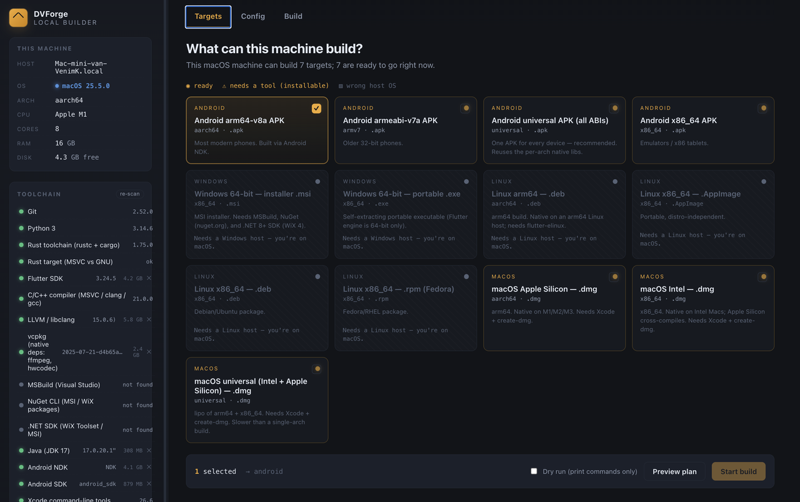
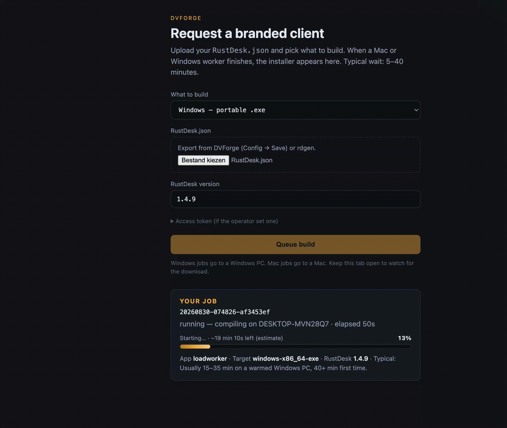

Server, public key, password, permissions, and branding baked into the installer. No GitHub Actions. No cloud CI. One local page in your browser — pick a target, hit build, done.


The same customisations as cloud CI, but your server address, API key, and passwords never leave your machine.
Your server IP, public key, permanent password, and API credentials are stored as GitHub secrets — on someone else's infrastructure.
Builds require a public or private repo, a workflow file, and a paid plan for longer runners. Every change is a commit-push-wait cycle.
Everything stays on your own hardware. Open a browser tab, fill in the config, press Build. Installers land in a folder on your disk.
No repo needed. No runner minutes. No secrets in the cloud. Python 3.8+ is the only prerequisite — toolchains install into a private folder automatically.
A local web app with three tabs — Targets, Config, Build — and a toolchain manager in the sidebar.
Detects your hardware and OS, lights up which targets this machine can produce. Amber means ready; click "install" on anything missing.
Server, key, API, app name, icon, logo, accent color, password, permissions, connection direction — all with a live preview of the baked-in payload.
Streams compiler output in real time. Dry-run mode prints every command without compiling. Cancel any time.
Rust, Flutter, LLVM, vcpkg, NDK, JDK — all download into .toolchains/. Nothing installed system-wide. Delete the folder to start clean.
Clean-room replacement for RustDesk's signature-locked printer_driver_adapter.dll. Remote printing works in your branded builds.
Generate a self-signed PFX for Windows or bring your own. macOS Developer ID supported. Signing is optional — builds work without it.
Shared inbox/outbox on a NAS. Mac worker builds DMGs, Windows worker builds EXEs. Submit via CLI or a queue API behind nginx.
Build APKs for arm64, armeabi, x86_64, or a universal package — from Linux, WSL, or macOS. Debug-signed by default; bring your own keystore for production.
Auto-applies allowCustom, hide connection manager, remove version nag, remove server-setup tip, privacy screen, and offline-peer styling.
A zero-dependency Python server drives detection, config generation, source patching, and the build — all through a browser GUI.
Desktop clients compile on their own OS. Android is cross-compiled from Linux, WSL, or macOS.
| You want | Build it on | Output |
|---|---|---|
| Windows app | Windows | portable .exe optional .msi |
| macOS Apple Silicon | any Mac | aarch64 .dmg |
| macOS Intel | any Mac | x86_64 .dmg |
| macOS Universal | any Mac | universal .dmg |
| Linux packages | Linux / WSL | .deb .rpm .AppImage |
| Android APK | Linux, WSL, or macOS | arm64 · armeabi · x86_64 · universal |
Clone, run the one-time setup for your OS, then launch. The UI opens at 127.0.0.1:8765.
git clone https://github.com/VenimK/DVForge.git && cd DVForge
Add --with-android if you want to build APKs too.
bash Setup-DVForge-macOS.sh
./run.sh
git clone https://github.com/VenimK/DVForge.git && cd DVForge
powershell -NoProfile -ExecutionPolicy Bypass -File .\Setup-DVForge-Windows.ps1
run.bat
git clone https://github.com/VenimK/DVForge.git && cd DVForge
This installs WSL 2, sets up Ubuntu inside it, and configures the toolchains.
powershell -NoProfile -ExecutionPolicy Bypass -File .\Setup-DVForge-WSL2.ps1
./run.sh
git clone https://github.com/VenimK/DVForge.git && cd DVForge
The app detects missing toolchains and offers one-click install from the sidebar. Or install them manually — the README has the full list.
./run.sh
Navigate to http://127.0.0.1:8765 in your browser.
python3 app.py also works. Add --no-browser to skip auto-open. Set RDLB_PORT=9000 to change the port.
Measured on the project's test machines. First run is slower (Rust downloads crates); subsequent builds reuse the cache.
The sidebar detects what you have. For most tools it downloads a portable copy into .toolchains/ — no admin, nothing system-wide.
| Tool | Pinned version | Used for |
|---|---|---|
| Python | 3.8+ | The app itself |
| Git | any | Source checkout |
| Rust | 1.75 (1.81 on macOS) | Every native build |
| Flutter | 3.24.5 | Every Flutter UI |
| LLVM / libclang | 15.0.6 | bindgen / ffigen |
| vcpkg | pinned commit | FFmpeg / hwcodec |
| JDK | 17 | Android builds |
| Android NDK | r28c | Android native lib (16 KB pages) |
| Android SDK | API 34 | flutter build apk |
| Xcode + create-dmg | — | macOS .dmg packaging |
| VS C++ Build Tools | 2022 | Windows .msi / linker |
.toolchains/ to start clean. Uninstall scripts included for each OS.
Applied automatically during the build. These strip upstream locks and clean up the branded client.
Strips the 9-line signature check from src/common.rs and renames custom.txt → custom_.txt so your config loads.
Hides the connection manager UI when connection direction is restricted.
Suppresses the "new version available" prompt that would point users to upstream RustDesk.
Removes the "set up your own server" tip from the connection page — irrelevant when the server is already baked in.
Adds privacy-screen support by embedding a custom image as a C++ byte array.
Adjusts the offline peer styling in the address book for better visual clarity.
Patches Flutter 3.24.4's DropdownMenu enableFilter regression.
Share a NAS folder (or use the HTTP queue) between machines. Each worker claims only the targets its OS can build.
Drop a job JSON into farm/inbox/. The Mac worker picks up macOS DMGs, the Windows worker picks up EXEs, the Linux worker picks up DEBs and APKs. Finished installers land in farm/outbox/.
No public website needed. No third-party builders. DVForge stays on 127.0.0.1.
Run queue.py behind nginx for remote submissions. Workers claim jobs over HTTPS with a bearer token. Status page at /status shows online workers, queue depth, and recent builds.
Workers are rated by success rate — higher-rated idle workers get jobs first.
python3 farm/submit.py --targets macos-arm64-dmg
Every field below is configurable through the DVForge GUI. No code editing required.
Can't find a setting you need, or want to customize something not listed here? Let us know — we're actively adding new options.
The RustDesk Client Customizer gives you a 1:1 live preview of every config field. Change the name, icon, colors, permissions, and theme — then export the same RustDesk.json that DVForge uses.
For the curious. How DVForge customizes, patches, and compiles a RustDesk client.
RustDesk reads its config from two places, and DVForge writes to both:
| What | How | When it takes effect |
|---|---|---|
| Server, key, API, app name, URLs, feature flags | sed-patched into the Rust and Dart source files | Compiled into the binary |
| Password, permissions, approve-mode | Written to custom_.txt as base64 JSON | Read at runtime |
The base64 encoding is mandatory — RustDesk's read_custom_client() starts with decode64(). Raw JSON will silently fail. DVForge handles this automatically.
On Android, custom_.txt can't be file-read, so the base64 config is also embedded into MainService.kt (native code) and native_model.dart (Flutter), plus bundled as flutter/assets/custom_.txt.
When you press Start build, orchestrator.py runs these steps in order. Each streams its output to the live console.
| Step | What happens |
|---|---|
| 1. Checkout | Clones RustDesk v1.4.9 into workspace/rustdesk-src/. Any previous source tree is wiped first (customizations mutate the tree). |
| 2. Patch | Applies allowCustom (strips signature check, renames config file), then all optional diffs: hidecm, removeNewVersionNotif, removeSetupServerTip, xoffline, privacyScreen, Flutter dropdown fix. |
| 3. Customize | Runs customize.py — sed-patches server, key, app name, company, URLs into source. Writes custom_.txt. On Android, embeds config into native code. |
| 4. Bridge codegen | Runs flutter_rust_bridge_codegen to regenerate Rust↔Dart FFI bindings. Version pinned to 1.80.1. |
| 5. Build | Invokes the OS-specific build: cargo build for Rust, flutter build for the UI. On Windows, also sets up vcpkg for FFmpeg/hwcodec. |
| 6. Sign | Optional. On Windows: Authenticode with your PFX. On macOS: codesign with Developer ID. Skipped if no cert is configured. |
| 7. Collect | Gathers the finished installer from the build tree into workspace/output/v1.4.9/ with your app name in the filename. |
Dry run prints every command without executing anything — useful for reviewing the plan or debugging.
RustDesk's upstream code has several locks and behaviors that don't make sense in a custom-branded build. DVForge applies minimal, targeted patches:
allowCustom is the critical one — RustDesk verifies a cryptographic signature on custom.txt and refuses to load configs not signed by RustDesk Inc. This 9-line block is removed so your own config works. The file is also renamed to custom_.txt (underscore) to avoid collisions.
The remaining patches are quality-of-life: hidecm hides the connection manager for restricted-direction clients; removeNewVersionNotif suppresses the "update available" prompt that points to upstream; removeSetupServerTip removes the "set up your own server" banner; xoffline fixes peer-offline styling; and the Flutter dropdown patch fixes a framework regression.
All patches are in patches/ as standard diffs — readable, auditable, and easy to update when upstream RustDesk changes.
RustDesk's remote printing feature depends on printer_driver_adapter.dll, which verifies the calling executable's Authenticode signature against a hardcoded allowlist of RustDesk's own certificates. Custom-branded builds fail with "printer service init failed" — even if you sign with your own cert.
DVForge includes a clean-room reimplementation: same four-function C ABI (init, uninit, get_prn_data, free_prn_data), same spool-directory polling mechanism, no signature check. It's ~140 KB with zero dependencies. The build process compiles it from source and swaps it into the installer automatically.
This is legal because the ABI is declared in RustDesk's own AGPL-licensed source, and the adapter contains no RustDesk code.
The config lives at configs/RustDesk.json — a single JSON file with ~70 keys covering everything from server addresses to base64-encoded icon images. You edit it through the DVForge GUI; it's also importable/exportable.
Key groups: serverIP, key, apiServer (server); appname, compname, iconbase64, logobase64 (branding); permanentPassword, passApproveMode, enableKeyboard…enableCamera (security & permissions); direction, installation, settings (behavior).
The file can be large (~5 MB) when icon and logo images are embedded as base64. This is normal — it's how the build farm transmits branding assets between machines.
| Path | Role |
|---|---|
| app.py | Python stdlib HTTP server + SSE log stream. Zero pip dependencies. |
| builder/detect.py | Hardware & OS detection → capability matrix |
| builder/prereqs.py | Toolchain presence checks & install hints |
| builder/toolchains.py | Downloads portable SDKs into .toolchains/ |
| builder/config_gen.py | Config → compiled-in values + base64 custom_.txt |
| builder/customize.py | Source patching (sed, Android embedding, allowCustom) |
| builder/orchestrator.py | Build pipeline: checkout → patch → bridge → build → sign → collect |
| builder/signing.py | Self-signed PFX creation & cert trust |
| web/ | Browser GUI (vanilla HTML/CSS/JS, no framework) |
| patches/ | Source diffs + Python patch scripts |
| farm/ | Multi-machine build queue (workers, submitter, HTTP queue) |
| printer-adapter/ | Open-source printer adapter DLL (Rust crate) |
| configs/RustDesk.json | Your baked-in config (edit through the GUI) |
| workspace/output/ | Finished installers appear here |
The questions people ask before their first build.
127.0.0.1 — it never phones home, has no analytics, and sends nothing to the internet. Your config is a local JSON file..toolchains/ folder. The exceptions are Xcode (macOS) and Visual Studio Build Tools (Windows), which require elevation.DVForge is built and maintained by these people.
Ask questions, share builds, report bugs, and help shape the roadmap.
Discord serverStars help new users find the project and signal that the tool is actively used.
Star the repo